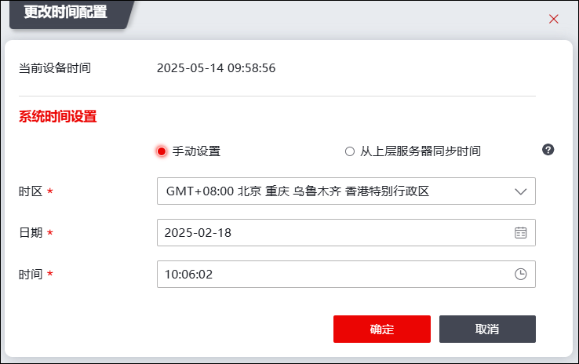
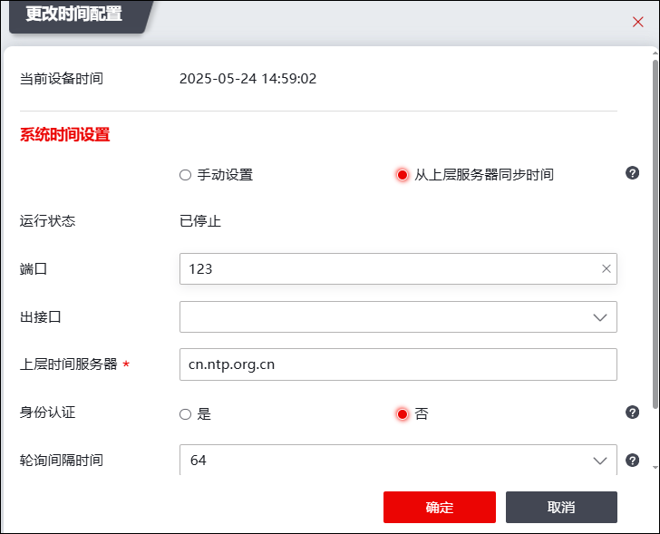

NGFW内置时钟，是记录日志信息、安全策略、监控系统等事件的时间基准，因此，NGFW的系统时间准确程度对具有时间戳的策略具有较大影响。为确保时间的精准性提供了系统时间管理功能，管理员可以手动修改系统时间、根据上层时间服务器同步更新设备时间。
配置NGFW系统时间的配置如下：
| 步骤1 | 选择 系统管理 > ，如下图所示。 |
| 步骤2 | 更改时间 |
点击【更改时间配置】按钮，如下图所示。

Ø方式一：手工设置。选择时区，配置具体时区、日期和时间点后点击【确定】按钮。
Ø方式二：从上层服务器同步时间。 从上层时间服务器获取时间并更新设备的系统时间，如下图所示。

勾选从上层服务器同步时间，参数配置说明如下。
参数 |
说明 |
|---|---|
上层时间服务器 |
设置上层服务器的地址。 |
运行状态 |
运行状态为已停止状态。 |
端口 |
设置上层服务器的端口信息。 |
出接口 |
设置上层服务器的出接口信息。 |
身份认证 |
选择是否需要身份认证。 |
服务器秘钥ID |
选择需要身份认证时，输入服务器秘钥ID。 |
服务器秘钥值 |
选择需要身份认证时，输入服务器秘钥值。 |
秘钥加密方式 |
选择秘钥加密的方式，可选择MD5或SHA-1。服务器密钥加密方式由上层时间服务器提供。 |
添加备选时间服务器 |
勾选之后，可配置备选时间服务器信息。 |
点击【确定】完成上层时间服务器的配置。